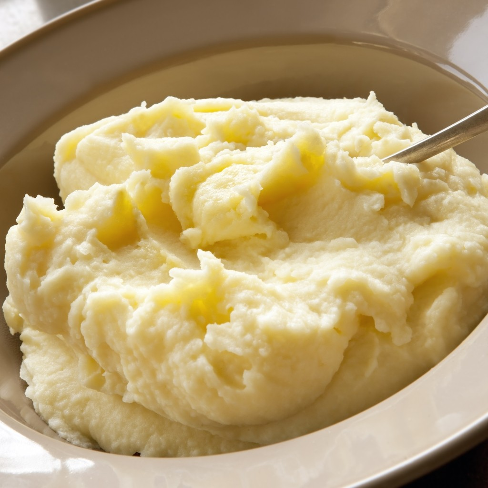

Pure de Batata

Descriçao
Quem nao gosta de pure de batata? Vai bem na comida, no cachorro quente, e tem ate aqueles que o comem puro!.
Ingredientes (rende 5 porçoes)
- 1 kg de batata
- 2 colheres (sopa) de margarina
- 1 dente de alho espremido
- 1/2 xícara de leite
- sal a gosto
Passo a Passo
Tempo de preparo: 1h
- Cozinhe as batatas até ficarem bem moles.
- Descasque-as ainda quentes e esprema as batatas no espremedor.
- Despeje as batatas em um recipiente e acrescente a margarina, o sal e o alho, e mexa até que a margarina derreta por completo.
- Acrescente o leite aos poucos e continue mexendo até pegar forma.